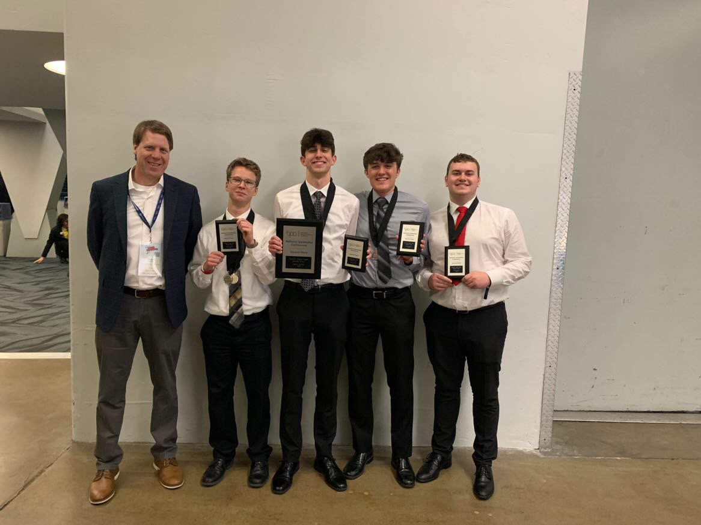

My Honors Gateway
Throughout high school, I completed various engineering, information technology, and computer science projects. These included building trebuchets, robots, video games, and networks. But none of these projects stood out like my senior Business Professionals of America project. Tasked with creating a multi-million dollar enterprise network for a high-tech baseball stadium my team and I were overwhelmed, to say the least. We had never taken on such a large task before but we knew that it would be worth it. We worked tirelessly anytime we could as we were still taking multiple high school and CCP classes. But finally, after many long nights, practice presentations, and reflection we made it to the national competition where we placed second in the nation. Though we didn't win we all celebrated knowing that we had completed one of the most memorable experiences of our entire lives.
